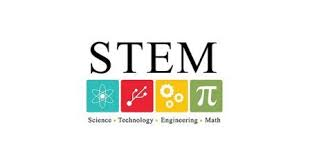

Campus Life
.jpg)
One of the biggest blocks in my School
KNMS school was established by Mrs. Geetanjali Satyamoorthy in 2008.
Service in admission enquiry by dedicated,experienced staffs and There are much green around the place..,

School Computer Lab
Probably built in 2009 when the School started to grow
The Lab is full of Technology based equipments to learn about computer science,tinkering and etc..,
school auditorium
It too was built in 2009 for extra curriculars
An definetely large place in the whole entire school which is used very often for competitions and to show off our talent but grandly..,
Achievements
Chennai Fc stands for Chennaiyin Football Club.
Partnered with an very famous football club in my state "Chennai FC" to find the skills of students in football and develop them.
The Spell Bee is an International level Competition.
Every year hundreds of students from my school get selected and win in Spelling Bee competitions,Plot twist:I too got selcted this year;wish me luck :)
What's New
-
New School Canteen

There is a bunch of canteens in our school but the plot twist is everytime I see the canteens,there will be no workers but the ice creams,juices and etc.. will be there!so I think it's like a food station where we have to take our dishes by ourselves..I can't really tell because I study sixth standard and still we (the whole sixth) are not allowed to go to canteens and eat so I think it's for higher grade students like 10-12th standardsbecause in every floor where a 10th standard class is,there will be a canteen and one of the important thing is there will be always mostly cool food like the ice creams,desserts and juices and not things like samosa,vada or etc... but I really don't know why.Even though we are not llowed to go to canteen there will be people out of our school when we disperse selling candies and they're not our school officials so I think they always come to our school when we leave is to attract tired student for candies and I really appreciate that as bussiness mind.
-
STEM
The STEM program (Science, technology, engineering, and mathematics):STEM Functional Literacy Program; Every child is unique, and they all learn differently, hence “One Size Fits All” philosophy doesn't apply to learning. In today's world, the skills that are essential to do well and help in problem solving, decision making, and innovation are called 21st Century Skills. These skills are broadly categorised into four areas: Critical thinking, Creativity, Communication, and Collaboration. Using Project and Design based learning approach and STREAM (Science, Technology, Research, Engineering, Art, and Mathematics) framework, KNMS creates an environment for your child to learn and develop these 21st Century Skills. KNMS weaves this creative education program as an interdisciplinary and experiential learning approach to teach design and creative thinking as a Subject. MATHEMATICS PROGRAM; At KNMS, the unique approach ensures that each student loves Math by finding solutions and relating Math problems with their lives. With this curriculum the children move from real life examples to representative pictures to abstract symbols. This helps them develop deeper understanding of MATHS concepts and lifelong learning. It also builds advanced skills in arithmetic operations and a solid foundation in Maths.